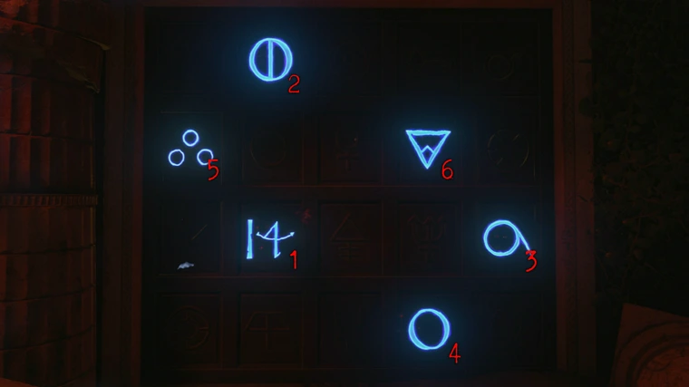

Prerequisites
- Sentinel Artifact Active
- All Hands to Redeemed (except Gaia)
- Redeemed Hand of Charon (step 2)
- Fallen Hand of Gaia (step 6, can be upgraded but not required)
- Redeemed Hand of Hemera (step 11)
- Redeemed Hand of Ouranos (step 16)
- Unlock PaP
- Shield
- Pegasus Strikes (step 16 but helpful for others)
- Turn the Eternal Flame blue.
Recommended Setup
- Elixers
- Anywhere but Here
- Equip Mint
- Arsenal Accelerator
- Temporal Gift
- Perks
- Dying Wish
- Victorious Tortoise
- Stamin-Up
- Modifier - Zombshell
- Specialist - Hammer of Valhalla
- Equipment - Wraith Fire
- Starting Weapon - Strife + Stiletto Knife
Main EE - Video
Rewards:
- Light your Shield's Spear on fire in the Eternal Flame by meleeing it and light 3 oil trails on fire
- On rock in Upper Road beside some statues
- On the wall near zombie spawn in Intersection of Treasuries
- On half wall near middle stairs statue in Spartan Monument
- With Redeemed hand of Charon, head to where pegasus picked you up and shoot a charged shot at your feet. Lookign at the statues around you, shoot the ones with glowing blue eyes (must be done with 4 statues). Can be done using multiple charged shots
- Shoot and destroy 3 glowing walls using a gun or shield spear
- On the back wall on middle statue area of Spartan Monument stairs
- Outside the map near giant arrow in Intersection of Treasuries
- To the right of you when exiting the same area above
- Look into the wall and shoot your spear at it as the smaller cog is touching the larger one (smaller gear will stop when successful
- Throw a spear into a cog in the far back area of the Stoa of Athenians when all the statues are facing inwards
- Grab the Hand of Gaia and shoot a series of roots with a single shot from the hand (1-2-3)
- Off the left side of the stairs leading down into OFfering of the Attalids on the far wall (aim directly at it and shoot)
- While still on the stairs you should move around until you see 2 green flashed from beside teh Danu perk statue, then fire a shot around the danu perk statue and it should hit both green flashes
- Position yourself down on the ground in the same room around the pillar until you see the 3 green flashes. Fire at the top set of roots and it should hit them all.
- When the mini boss spawn, bring him over to the Intersection of Treasuries and get him to shield blast the left most red crystal with the Ra Perk Ank in it
- Kill him using your specialist and pick up his spear, then pick up the piece that now dropped.
- Return to the Offering of the Attalids area and interact with the center hole in the golden circles on the floor to place the spear.
- Kill an electric zombie over the sun dial. One symbol in the clock should be blue and you'll see an electric line on the dial. You must count the gold slates between the hole and the line and time it so when you stop the dial, the blue is under that electric line. Interact with the spear to stop the rotating. (repeat 2 more times with the other 2 rings. wait for screen to stop shaking before doing another. Speed and windows will change but the location will not change between rings.)
- Grab the Redeemed Hand of Hemera (should also get maxed out MOG 12, pegasus strikes, specalist, full shield, all perks, max ammo)
- Return the part you got earlier to the Ra Perk Statue and interact with it to give the statue the Hand of Hemera. You now need to defend the beam of light from skeletons with shields until the wall breaks. (if the light is blocked for too long, the beam will stop and you will need to grab the Hand and place it back down again to restart)
- Grab the part from within the now broken wall and return it to the Ra Perk Statue.
- Grab your prefered Hand gauntlet and head to the Amphitheater and stand on the blue light. Everytime a light shines, you need to run and stand in it and kill the zombies that spawn with a single activation of your weapon (you can walk around after initially entering the light) When your screen turns grey, return to the blue symbol and do it again. The process needs to be repeated 3 times (for 3 acts)
- Head to the River of Sorrows via Fast Travel and you'll find a door with symbols on it to your right. You need to shoot 6 symbols on it in the correct order using a PaP'd weapon (order and positions will never change)
- Interact with the door and place a Pegasus Strike down on the blue symbol behind you. Fire a Charged attack with the Redeemed Hand of Ouranos at the crossbow to turn it
- Ignite your spear in the Eternal Flame at spawn and walk through the venom trap in Python Pass with your shield in yoru hand. (spears fire should turn green)
- Melee the crossbow at the top of the stairs to fire the bolt.
- You can now enter the BOSS FIGHT via the new golden portal behind PAP

Boss Fight
Pegasus Stage
- Damage pegasus while he's flying over you. Once he lands, use your specialist to deal damage.
- When pegasus gets back up, leave the island quickly and continue to shoot him. (you must down him 3 times) After the first time, an island will be destroyed, stopping you from being able to travel to it.
- If you step into the fire from the spears, it will damage you quite a bit but also regenerate your specialist quicker.
- After this phase ends, an island will be destroyed, making it inaccessable.
Perseus Stage
- When Perseus teleports onto the island, damage him. Other then that, survive the waves of zombies.
- After shooting his glowing weak spots, he'll keel over and you need to damage him using your specialist.
- Once he's dead, pick up the key to finish the EE.